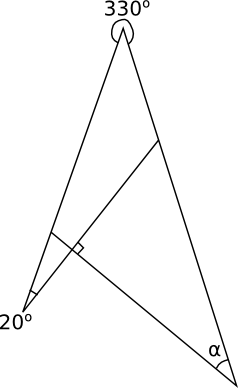
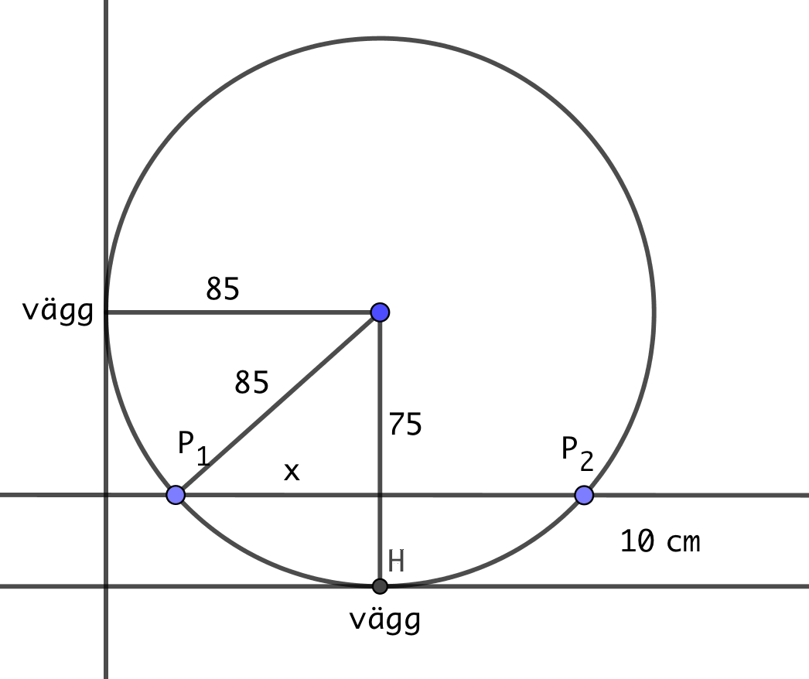
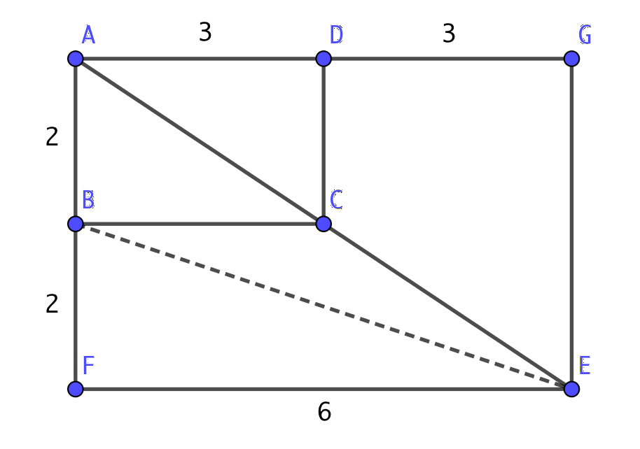
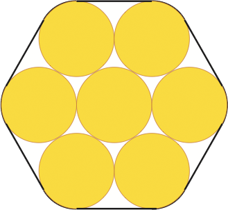

19. Repetition
Uppgifter
Bestäm storleken av vinklarna \( \alpha \), \( \beta \) och \( \gamma \).

Summan av \( \alpha \) och vinkeln 130o är 180o. Därför är \( \alpha= 50^{\circ} \)
\( \beta \) är vertikalvinkel till vinkeln i triangeln som består av \( \alpha \) och vinkeln 60o. Då är \( \beta \) \( 180^{\circ} - 60^{\circ} - 50^{\circ} = 70^{\circ} \).
Eller så kan vi resonera som: \( \beta \) och \( \gamma \) är varandras sidovinklar, summan 180o. Därför är \( \beta= 70^{\circ} \).
\( \gamma \) och \( \beta \) är varandas sidovinklar. Alltså är \( \gamma=110^{\circ} \).
Bestäm vinkeln \( \alpha \).

40o
Visa att \( \alpha \) och \( \beta \) är lika stora.
 Lösningen
Lösningen- Hur stor bör mittpunktsvinkeln vara för en sektor om man vill av sektorn tillverka en kon vars radie för basytan är 5 cm och mantelytans radie är 8 cm?
225o
- Följande uppgifter gäller rätvinkliga trianglar där vi kan utnyttja Pythagoras sats.
- Två sidor i en rätvinklig triangel har längderna 4 och 7. Beräkna längden av den tredje sidan.
Eftersom triangeln är rätvinklig utnyttjar vi Pythagoras. Eftersom vi inte vet något om förhållandet mellan sidorna kan den tredje sidan vara en katet eller hypotenusan.
Tredje sidan katet, \( 4^2 + b^2 = 7^2 \) ger oss \( b = \sqrt{33} \).
Tredje sidan hypotenusa, \( 4^2 + 7^2 = c^2 \) ger oss \( c = \sqrt{65} \).
Märk att vi inte har någon enhet, då svarar vi exakt.
- Är en triangeln med sidorna 4, 5 och 6 rätvniklig?
Om triangeln är rätvinklig så gäller Pyhtagoras sats.
Den längsta sidan är hypotenusan. \( 6^2 = 36 \).
För kateterna gäller, \( 4^2 + 5^2 = 41 \).
Alltså är triangeln inte rätvinklig.
- För vinlket värde på \( a \) gäller att en triangel med sidorna \( a - 1 \), \( a \) och \( a+1 \) är rätvinklig?
Om triangeln är rätvinklig så gäller Pyhtagoras sats.
Den längsta sidan är hypotenusan, \( a+1 \).
Kateterna är \( a -1 \) och \( a \).
Vi får \( (a-1)^2 + a^2 = \(a+1)^2 \). Du får en andragradsekvation vars rötter är \( a = 0 \) och \( a = 4 \).
Eftersom längden måste vara positiv är längden av sidorna 3, 4 och 5.
- Två sidor i en rätvinklig triangel har längderna 4 och 7. Beräkna längden av den tredje sidan.
- Solen skiner från en vinkel om 51o. Av en flaggstångs skugga faller 4,5 m på marken och 1,5 m på en husvägg. Bestäm höjden av flaggstången.
Vi utnyttar trigonomertri.
7,1 m
- Sidorna i en triangel är 5,1 cm, 6,3 cm och 7,8 cm. Hur stor är den största vinkeln i triangeln? Svara med en tiondel grads noggrannhet.
94,3o. Vinkeln mot sidan som är 7,8 cm.
- Ett cirkelformat bord är placerat i hörnet av ett rum, se bild. Diametern för bordet är 170 cm. En punkt på bordets omkrets är 10 cm från väggen som är vågrätt från bordet. Bestäm avståndet till väggen som är lodrät från bordet.
Vi har följande figur

Vi får ekvationen \( 75^2 + x^2 = 85^2 \). Vi får att \( x = 40 \) cm.
Alltså är punkten \( P_1 \) på avståndet \( 85 - 40 = 45 \) cm och punkten \( P_2 \) på avståndet \( 85 + 40 = 125 \) cm.
- I rektangeln ABCD är längden för sidan AB 2 och AD 3. Sträckorna AC och CE är lika långa, se bilden. Bestäm längden av sträckan BE.

Eftersom sträckorna AC och CE är lika långa är rektanglarna ABCD och AFEG likformiga. Då får vi följande figur.

Eftersom vi har en rektangel kan vi utnyttja Pythagoras sats.
Vi får att \( \mid BE \mid = \sqrt{2^2 + 6^2} = \sqrt{40} \approx 6,3 \).
- Kantens längd i en kub halveras. Med hur många procent minskar
- kubens volym?
87,5 %
- sidoytornas totala area?
75 %
- kubens volym?
Sju tallstockar binds ihop med en vajer enligt figuren nedan. Hur lång vajer behövs för ett varv? Varje stock har diametern 20 cm. Ange svaret med en centimeters noggrannhet.

183 cm
- Ett konformat glas fylls till halva höjden. Hur stor del av hela volymen blir fylld? Hur högt borde man fylla glaset om man vill fylla glaset med halva volymen?
- Hur stor del av hela volymen blir fylld?
En åttondel, 0,125.
- Hur högt borde man fylla glaset om man vill fylla glaset med halva volymen?
\( \dfrac{1}{\sqrt[3]{2}} \)
- Hur stor del av hela volymen blir fylld?
- Cirkelns diameter är 6,0 cm. Bestäm längden av AB.

Hur stor är vinkeln C? Vad hände med vinklarna vid A och B om du flyttar på punkten C på periferin?
1,1 cm
Vinkeln vid A är 7o. Sträckorna AB, BC, CD osv är alla lika långa. Från och med BC går sträckorna mellan vinkelbenen, se figur. AB räknas som den första sträckan, BC som den andra osv. Hur många sådana sträckor kan man konstruera utan att sträckorna skär varandra?

12 st